Contents
Tutorial: How to create a Kriging Object
function [KrigingObj] = tutorialCreatingObject(varargin)
Initialisierung
% Decide if estimated Kriging model shall be visualized if length(varargin)>=1&&~(varargin{1}) visualizeResult = false; else visualizeResult = true; end % Generate Data on 6X6 grid in the range [0,10] nLevelsEachDimension = 6; input = createNDGRID(zeros(3,1),ones(3,1)*10,nLevelsEachDimension); output = tutorialFunction(input);
Test Function
The test function as follows:
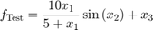
That is, the output is related to the first input variable by a Michaelis Menten curve(steep increase for small values followed by a plateau). The second input variable leads to oscillation and the third input variable leads to an linear monotonically increase. The effect of the first and second input are coupled with each other.
For a better visualization, pair-wise combination of input variables are plotted against the output. Remaining input variable was hold constant at the value of 2.
if visualizeResult visualizeTestFunction(); end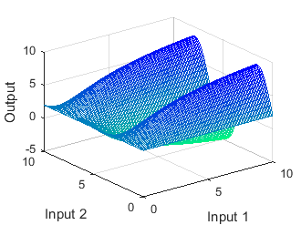 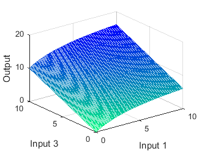 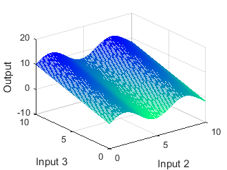
Create Analysis Object
AnalyzeKriging inherites KrigingSuperClass and manages Kriging objects. AnalyzeKriging also contains all analysis tools.
KrigingObj = AnalyzeKriging;
% Remember the Currently used object
indexKrigingObj = 1;
Initialize Kriging object:
- The first input indicates the type of Kriging. Use 1 for Ordinary Kriging and 2 for Universal Kriging. Ordinary Kriging is a special type of Universal Kriging as it sets the basis function automatically to a constant. With Universal Kriging, you can use any function as basic function.
- Second input is a string describing the output variable
KrigingObj.addKrigingObject(2,'Test Output')
Load input data and name input variables
- Structure of the input variable has to be nDataPointsXnInputVariables
- First input argument for "setInputVarNames" is the index of the Kriging object of current use
- Second argument is string-array containing the names of the input variables
KrigingObj.KrigingObjects{indexKrigingObj}.setInputData(input)
KrigingObj.setInputVarNames(indexKrigingObj,{'Input 1','Input 2','Input 3'})
Load output data. The output data container has to be a vector of the length nDataPoints
KrigingObj.KrigingObjects{indexKrigingObj}.setOutputData(output)
Create Kriging Object and estimate covariogram parameters
The backbone of Kriging is the estimation of the covariogram. The covariogram helps to estimate the covariance between the data points. In general, the covariogram considers only the distance between two points. The closer data points are the higher is their covariance. Kriging prediction is done by a linear combination of the provided data. Here, measurment data at points with high covariance values w.r.t. the point of interest are higher weighted.
Choose covariogram model:
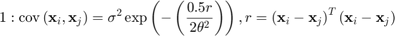
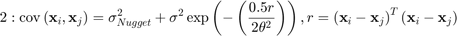
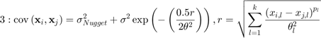
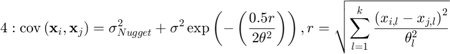
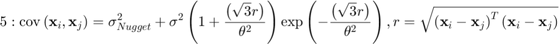
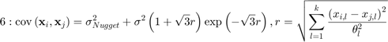
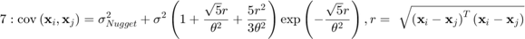
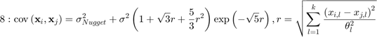
KrigingObj.KrigingObjects{indexKrigingObj}.setCovariogramModelChoice(5);
Choose basis function. Here we use a constant as basis function. The value of the constant is automatically estimated by Kriging
KrigingObj.KrigingObjects{indexKrigingObj}.setBasisFct('polynomial',0)
Matlab's statistic toolbox (2015b and newer) is able to efficiently estimate the covariogram parameters. This is in general very robust and should be used if possible
KrigingObj.KrigingObjects{indexKrigingObj}.setUseMatlabRegressionGP(true);
Alternatively, one of the integrated solver can be used. Here, an open source genetic algorithm is applied. Further possible solver choices are described in the documentation of makePrework . Upperbounds of covariogram parameters should be adjusted for efficiency reasons.
if ~KrigingObj.KrigingObjects{indexKrigingObj}.getUseMatlabRegressionGP() KrigingObj.setShowDetails(true) KrigingObj.KrigingObjects{indexKrigingObj}.setUBCovariogramModelParameters([100,100,1]) KrigingObj.KrigingObjects{indexKrigingObj}.setnIterationsSolver(1e2) KrigingObj.KrigingObjects{indexKrigingObj}.setUseSolver(2) end
Perform estimation
KrigingObj.KrigingObjects{1}.makePrework
Check Results
The following plots show the resulting Kriging prediction surfaces. Again, the input variables are pair-wise plotted against the output setting the value remaining input variable fix to 2. Red dots indicate the provided data.
if visualizeResult combinations = [1,2,3;1,3,2;2,3,1]; KrigingObj.setShowBounds(false) % Show only prediction not the confidence tube KrigingObj.setShowData(true) % Show provied data points for iComb = 1:3 KrigingObj.calcInterpolation_3D(indexKrigingObj,... combinations(iComb,1:2),combinations(iComb,3),2) KrigingObj.plotInterpolation_3D(indexKrigingObj) campos([-40.0176 -52.6198 92.8089]) grid on % Set format appropriate for documentation set(gcf,'Position', [100, 100, 330, 330/4*3]); set(gca,'FontSize',10) end KrigingObj.setShowBounds(true) end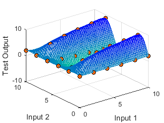 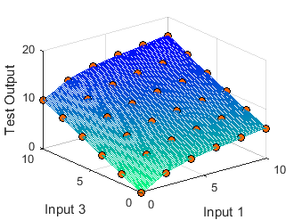 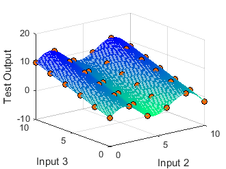
end